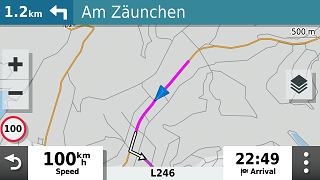

POI files, on the XT(2) they have the
extension .gpi, can be useful if you want to be warned while
driving. The POI is not necessarily related to an active route.
A common application is speed camera’s. For speed camera’s you
can find enough examples on the net. I’m presenting another
example: ‘Strecken sperren’.
This is something that you can encounter in
Germany. Some roads, usually only known to local bikers, are
closed for motorcycles during the weekend, or are even
completely closed. This is the link to a German site.
And the link where you can download a GPX
file:
Steps:
· Download the GPX file.
· Optionally import it in BaseCamp to view what’s it about.
(SASO means closed on Saturday’s and Sunday’s (Samstag,
Sonntag)
· In
TripManager navigate to the folder where you downloaded the
GPX.
· Click on ‘Send to Device’. Check only Points Of Interest
(.gpi). By default only ‘Way points’ are selected. For this
demo that is all you need. The choices you make are saved as
default.
· Optional: The files will be placed in the default folder
for preset ‘POI (Gpi)’. If you have an SDCard installed it is
recommended to install the .gpi file there, because the zūmo
XT\Internal Storage\POI folder contains some pre-installed
files. To change the default:
ØSelect the preset
POI.
ØNavigate to the
zūmo XT\Memory Card\Garmin\POI folder
ØAnd click on Set
Default.
How it looks on the XT when you are within the
proximity. (Default 500 mtr)
|

Note: The route says turn left. You may,
or may not, be allowed to enter! Depending on the day of
the week.
|
|
Within 500 Meters, you get the
alert.
|
Notes:
· The Icons are how they look in Basecamp and not a
green/white heart.
· If
you have sound enabled for ‘Proximity alerts’ you should hear a
‘double plung’. This may be configurable in a next
version.
· You can generate GPI files for any way points, routes
that you create in Basecamp. The Icon and proximity you specify
in Basecamp will be respected.